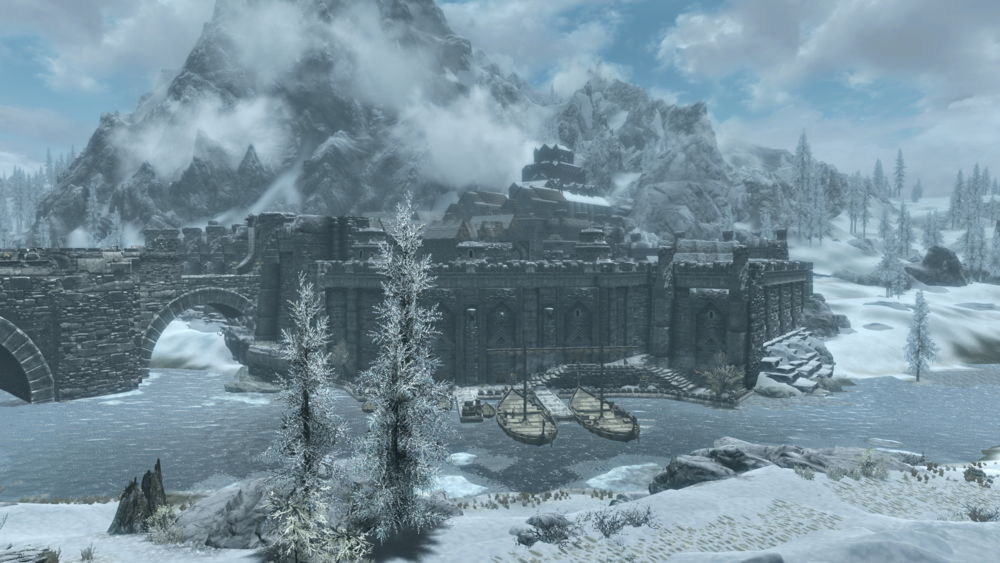
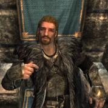
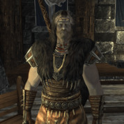
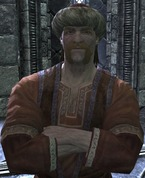
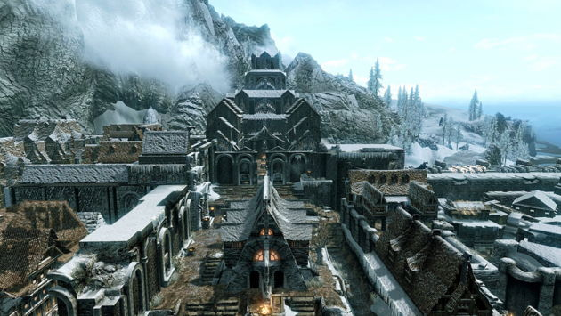
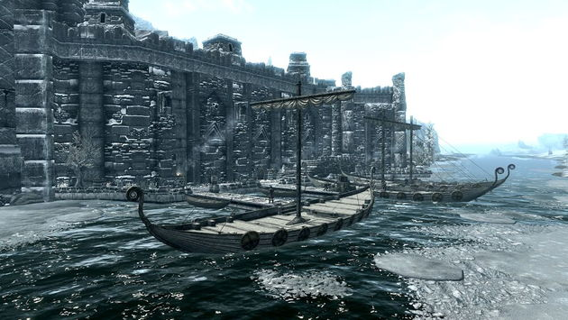

.jpg)
"Это старый город, скажу тебе наверняка. Королевский дворец - древнее сооружение. Чужакам тут не очень-то сладко. Всех темных эльфов выставили в трущобу под названием "квартал Серых". Аргониан вообще за стены не пускают. Они так и живут в доках. Но все же в "Очаге и свече" можно найти приличную еду и дешевую постель. Могло быть и хуже." —Альфаринн

Виндхельм — один из крупных городов Скайрима, столица владения Истмарк. Расположен недалеко от северной границы владения, рядом с Винтерхолдом. Город стоит на северном берегу Белой реки и своими массивными обледенелыми каменными стенами представляет внушительное зрелище. Когда-то он был столицей Первой империи нордов, и с тех пор дворец Исграмора возвышается в центре города.Путешественников, направляющихся в город, встречает величественный замороженный мост, который венчается мощным тет-де-поном. Укрепления, носящие следы прошлых испытаний, остаются надёжным оплотом на пути к главному городскому входу. Возле аппарели, ведущей на мост, расположена традиционная для крупных городов Империи конюшня. На площадке перед ней находится стоянка извозчиков, которые за умеренную плату довезут в любой крупный город провинции. Сам Виндхельм расположен на нескольких уровнях, террасами поднимающихся от главных ворот в северном направлении. Самым крупным строением города является старый Дворец Исграмора (впоследствии известный как Королевский дворец). Возвышаясь над всеми другими строениями города, он является действительно захватывающей дух доминантой. Вследствие северного климата на улицах повсюду лежит снег, что может вызвать чувство клаустрофобии: небо почти всегда белое или пасмурное, а жестокая пурга заметает город с пугающей регулярностью. Юго-восточные стены, выходящие на берег Белой реки, своим основанием формируют набережную. Причалы, пристроенные к ней, образуют доки. Неширокий проход своими многочисленными ступенями ведёт от причалов к другому входу за городские стены. Сразу за воротами расположен Каменный Квартал — центральный район Виндхельма, место, куда посетители попадают сразу при прохождении через Главные ворота в город. В квартале расположены рынок и наиболее важные магазины и гостиницы. Восточные ворота из доков выходят к границе Квартала серых. Здесь расположены клуб «Новый Гнисис» и магазинчик «Подержанные товары Садри». Квартал, ранее называвшийся Снежным, получил такое прозвище из-за множества тёмных эльфов, проживающих здесь. Для эльфов название «Квартал серых» является одной из насмешек, проявлением жестокости и дискриминации. Виндхельм предоставляет примеры такого отношения: уже при входе в город, возле самых Главных ворот, на глаза могут попасться Рольф Каменный Кулак и его дружок Ангренор Награждённый с их расистскими разглагольствованиями в отношении тёмных эльфов — в частности, домовладелицы Суварис Атерон. Эта расовая напряжённость хоть и дисгармонирует с эффектной и прочной древней нордской архитектурой Виндхельма, этого чудесного города-крепости, но вполне соответствует отношению данмеров к нордам в Морровинде в его лучшие годы. Данмеры считают, что норды Виндхельма всегда видели в них чужаков и ненавидят их за это. И самое основное: Виндхельм — главный штаб Братьев Бури. Правитель города на момент начала игры — Ульфрик Буревестник, однако в случае окончания гражданской войны в пользу Империи правителем становится Брунвульф Зимний Простор.
Оказавшись впервые в городе, Драконорождённый становится свидетелем казни Роггвира за измену Империи — он открыл ворота и выпустил Ульфрика Буревестника из города после убийства верховного короля Торуга. Многие жители впоследствии вспоминают эту казнь. Здесь Довакин может вступить в ряды Имперского легиона. В Мрачном замке присягу примут лично генерал Туллий и его помощница — легат Рикке. Так как Мрачный замок является штаб-квартирой Имперского легиона в Скайриме, то все задания Довакин будет получать именно тут, также сюда придётся возвращаться с отчётами после выполнения приказов генерала. Если же события гражданской войны развиваются благоприятно для восставших, то город подвергнется штурму Братьев Бури, и Довакин вместе с Ульфриком Буревестником и его «правой рукой», Галмаром Каменный Кулак, захватят город и произведут штурм Мрачного замка, где состоится финальная битва с генералом Туллием и легатом Рикке с последующей казнью генерала (Рикке погибает в бою).
Администрация | |
Королевский дворец | |
| Ярл Ульфрик Буревестник | Галмар Каменный Кулак |
|  |  |
| Йорлейф | |
|  | |
| / | |  |
| Город | Таверна ночью | Гавань |